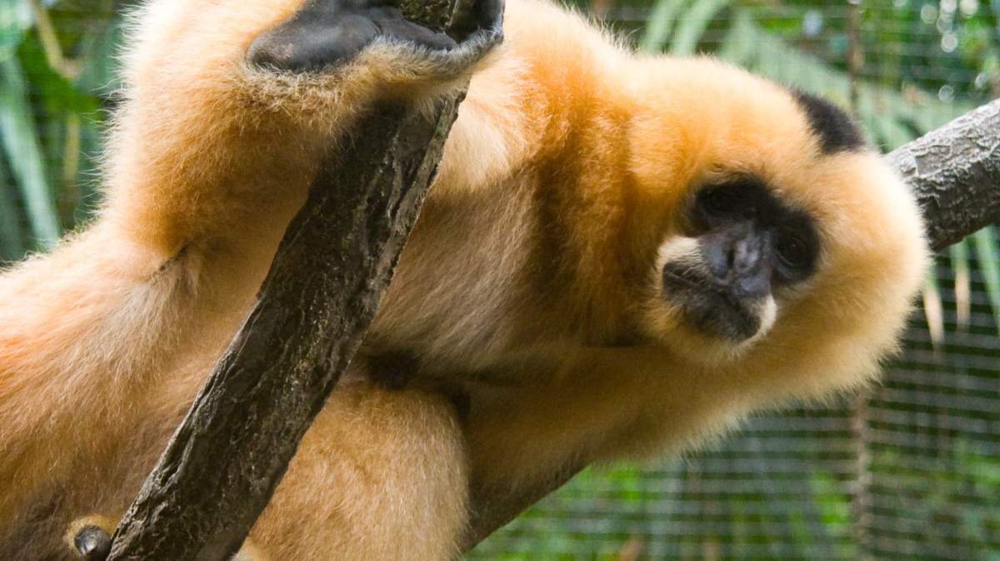

Land Animals
1. Hainan Gibbon (Nomascus hainanus)
The stunning Hainan gibbon is the rarest ape in the world and probably the rarest mammal – with a total population of around [25 individuals](https://www.zsl.org/conservation/regions/asia/hainan-gibbon-conservation). The apes were previously found across eastern China, but they have suffered badly from both hunting and habitat loss over the past hundred years. Hainan gibbon are now found only in a single patch of forest in the [Bawangling National Nature Reserve](http://www.ehainan.gov.cn/2017-11/08/c_126040_7.htm) on China’s Hainan Island. There are only three social groups actively breeding, and along with its small population size, lack of population growth, and tiny range, this species has a bleak long-term outlook. Bawangling National Nature Reserve in Hainan
2. Markhor
This exotic wild goat is also known as a “screw horn goat,” and it’s easy to see why: Its head is adorned with long, corkscrew-shaped horns. Unlike most goats, which can appear a little silly, the markhor strikes a majestic pose, with a long beard that clearly demonstrates wisdom. The species is a rare success story; thanks to dogged conservation efforts, its numbers have gone up by 20 percent, and it’s no longer on the endangered list.
Loctaion
You’ll find markhor in the mountains of Pakistan, Afghanistan, Turkmenistan, the Himalayas and Uzbekistan. If you want to see one in the wild, however, plan on hiking to high elevations in remote ranges, where it’s most likely to roam.

3. Mexican Mole Lizard
The Mexican mole lizard is easily mistaken for a large worm at first glance, but upon closer inspection, you will notice its elongated, ribbed body is attached to short legs with five fingers. Its head also has eyes and a mouth, but you must look closely before the features become apparent.
Location
Want to track down one of these odd-looking, five-fingered lizards? Its simple. Head to Mexico’s beautiful Baja peninsula, where they are native.

4. Panda Ant
Just as panda bears are notoriously cute, so too are panda ants. Fuzzy, with white bodies and black spots, they look adorable and innocent. But don’t underestimate them, as they might actually be more dangerous than the bears. In fact, the females are actually wingless wasps. This means they pack a serious punch with their sting.
Location
Where to spot a Panda Ant. Panda ants are found in Chile and Argentina. If you spot one, consider yourself lucky, but whatever you do, don’t pick it up.

5. Sumatran Rhino
The Sumatran rhino is the smallest of all rhinoceros species, and along with the Javan rhino is one of the most at-risk rhino species. There are thought to be only around 100 of these creatures left in the wild in Sumatra, Borneo, and the Malay Peninsula. Attempts to breed these rhinos in captivity have resulted in only two females reproducing in the last 15 years. If you do get the chance to see one, they are easily distinguishable as they have a [covering of long hair](https://www.worldwildlife.org/species/sumatran-rhino), which helps to keep mud on their body to both regulate their temperature and protect them from insects. This biological feature is one that makes researchers believe the Sumatran rhino is the most closely related rhino species to the extinct.
Loctaion
The Sumatran rhino once roamed as far away as the foothills of the Eastern Himalayas in Bhutan and eastern India, through Myanmar, Thailand, possibly to Vietnam and China, and south through the Malay Peninsula. Today, the species only survives on the Indonesian islands of Sumatra and Borneo.